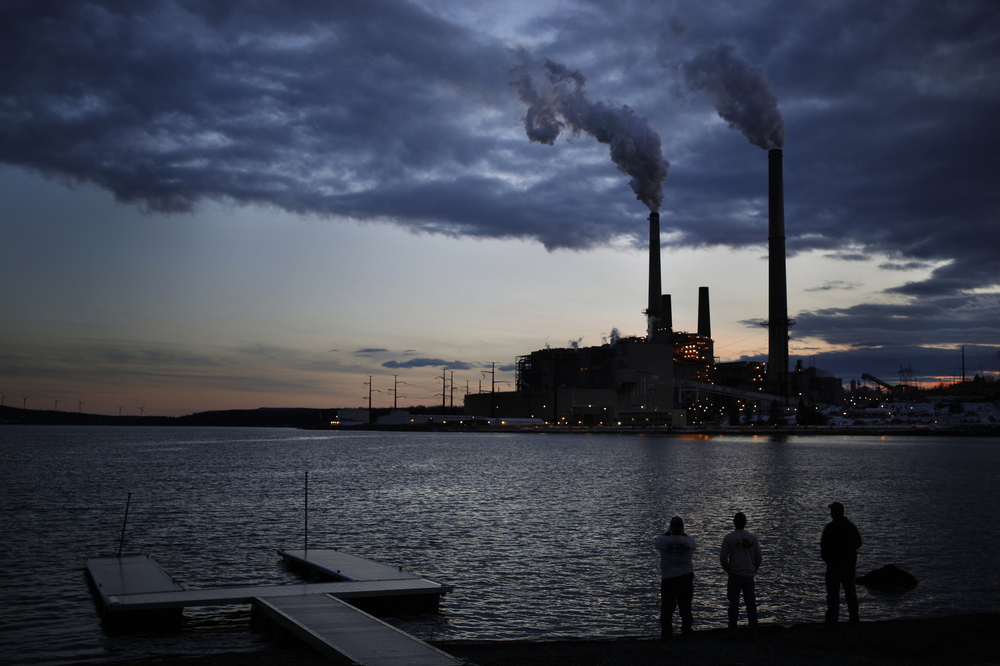
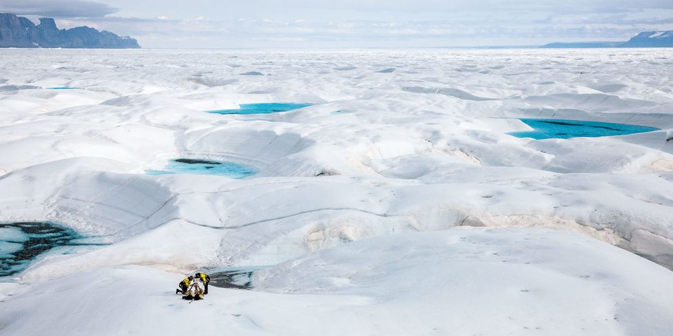
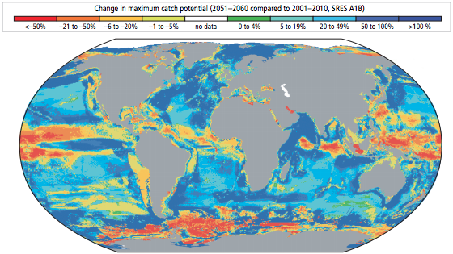
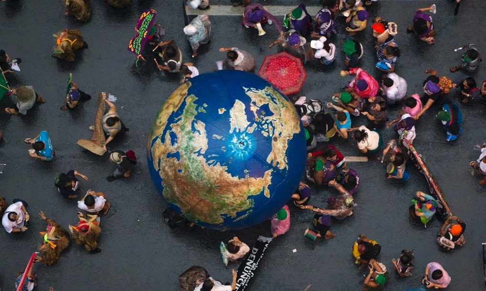

Further Reading
From the intensely academic to the light and fluffy, we have you covered if you want to read more about climate science.
Climate Change Denial
-

How G.O.P. Leaders Came to View Climate Change as Fake Science
"...a story of big political money, Democratic hubris in the Obama years and a partisan chasm that grew over nine years...favoring extreme positions and uncompromising rhetoric over cooperation and conciliation."
-

When the End of Human Civilization Is Your Day Job
"...for their pains the scientists themselves—the cruelest blow of all—have been the targets of an unrelenting and well-organized attack that includes death threats..."
Climate Change Reality
-

Scientific consensus: Earth's climate is warming
"Multiple studies published in peer-reviewed scientific journals show that 97 percent or more of actively publishing climate scientists agree*: Climate-warming trends over the past century are extremely likely due to human activities."
-

Climate Change 2014 Synthesis Report Summary for Policymakers
"Human influence on the climate system is clear, and recent anthropogenic emissions of greenhouse gases are the highest in history. Recent climate changes have had widespread impacts on human and natural systems."
-
Why Sustainability Is Now the Key Driver of Innovation
"...it’s smarter to comply with the most stringent rules, and to do so before they are enforced. This yields substantial first-mover advantages in terms of fostering innovation."
-

Sustainable development goals: all you need to know
"The sustainable development goals (SDGs) are a new, universal set of goals, targets and indicators that UN member states will be expected to use to frame their agendas and political policies over the next 15 years."
Sustainability
Climate Change Denial
-
How G.O.P. Leaders Came to View Climate Change as Fake Science
"...a story of big political money, Democratic hubris in the Obama years and a partisan chasm that grew over nine years...favoring extreme positions and uncompromising rhetoric over cooperation and conciliation."
-
When the End of Human Civilization Is Your Day Job
"...for their pains the scientists themselves—the cruelest blow of all—have been the targets of an unrelenting and well-organized attack that includes death threats..."